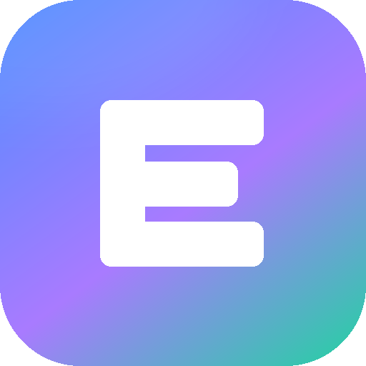

一个会自己上网学习、并且越学越强的 AI
你可能听过「让 AI 自己学习」，但真正的自我进化其实是两件事。这个系统两件都做了：
AI 自己决定「我该查什么」→ 去网上搜 → 打开网页读正文 → 把有用的结论提炼成一条条知识点存进知识库。
下次回答问题时先查知识库。学得越多，懂得越多。
特点：几分钟就能看到新知识，随时可增删，不占显卡。
知识库攒够素材后，把这些内容做成训练集，用你的 4090 微调模型参数，产出一个新的模型。
微调之后，知识就长在模型里了——不用查资料也能答上来。
特点：每次要跑几小时显卡，但这是真正的「模型进化」，不只是查资料。
学习过程中如果发现网上有对口的模型或数据集，它会自己判断值不值得下，然后下载到本地。
有安全阀：先算体积，再查磁盘预算，超了自动跳过，绝不会把硬盘塞爆。
安装的时候会问你一次要不要在桌面放图标。选「不要」完全不影响使用，只是每次得进文件夹找启动文件。

双击 ③ 桌面图标.cmd，它会先告诉你现在桌面上有没有，再问你要创建还是删除。
如果你的桌面被改到别的盘（比如 D 盘），它也能找对地方——
不会傻傻地往 C:\Users\你的用户名\Desktop 里塞文件。
| 阶段 | 动作 |
|---|---|
| 诊断缺口 | 先看已经会了什么，再判断「还缺什么」，生成不重复的检索词 |
| 多源检索 | 同时搜网页、arXiv 论文、GitHub 仓库、维基百科、HuggingFace |
| 阅读 | 抓网页正文，自动去掉导航广告，只留干货 |
| 提炼 | 从正文里抽出能独立成立的结论，标上可信度和出处 |
| 入库 | 语义去重后写进知识库（重复的不会重复存） |
| 资源扫描 | 顺手看看有没有值得下载的模型/数据集 |
| 反思 | 总结这轮学到什么、下一轮该往哪深挖 |
普通爬虫是「搜关键词 → 存起来」，搜完就没了。
这个系统每轮都会把「已经掌握的知识」和「用过的检索词」喂回给模型，强制它找新的空白点。
所以第 1 轮建立框架，第 3 轮进入机制细节，第 6 轮开始挖边界条件和争议点——一层比一层深。
如果你不想一直盯着，打开「自主进化」页下方的持续自学开关就行。
间隔时间可以在「设置」里调整。想让它学得更密，就把空闲时间调短（比如 5 分钟）。
持续自学开着的时候，显卡和网络会一直被占用。你要玩游戏、跑渲染、或者要用电脑干重活之前，记得先关掉。
网上搜不到的内容，可以把你自己的书导进去。左边点「书库」。
K:\书籍\我的电子书库。可以加很多个。txt md epub pdf docx html，
或者直接粘贴一个链接。
PDF 有两种：一种是电子排版的（能提取文字），一种是扫描的（本质是图片）。
扫描版提取不出文字，系统会自动跳过并标注「扫描版 PDF，需 OCR」。
所以优先导 txt / epub / docx，这些一定能读。
添加目录时可以填「排除关键词」，路径里含这些词的会自动跳过。
比如填 成人，那所有路径带这个词的文件夹都不会被扫描。
知识点会进「知识库」，每条都标着出自哪本书的哪一章。
也可以直接去「检验所学」提问，书里的内容会和网上学的一起被检索到。
每本书默认最多提炼 40 个块（约 8 万字）。太厚的书会只学前半部分—— 这是为了避免一本书跑一整天。需要更多可以在导入时调整。
| 页面 | 用途 |
|---|---|
| 总览 | 看总共学了多少、各方向分布、最近在干什么 |
| 自主进化 | 设定方向、启动学习、看实时过程 |
| 知识库 | 看学到的每一条知识，能语义搜索，能删除错的 |
| 书库 | 导入自己的电子书，支持多个目录 |
| 资源获取 | 看它自己下了什么，也可以手动指定要下哪个模型 |
| 权重进化 | 把知识做成训练集，微调出新模型 |
| 检验所学 | 直接问它问题，它只用学过的知识回答并标出处 |
| 设置 | 改模型、改预算、配代理 |
这是判断它到底学没学会的地方。它的回答有两个特点：
如果它答得含糊，说明这个方向还没学透，回去多加几轮。
这是让模型「真的变强」的部分。整个流程四步：
默认是全自动的：学到某个方向时，它会去 HuggingFace 找对口的模型和数据集，用模型自己判断值不值得下，然后下载。
如果不想让它自动下，去「设置」里把「自动下载」关掉，它就只记录、不下载。
如果下载的是 GGUF 格式的模型，它会自动注册进 Ollama， 你可以在「设置 → 主推理模型」里直接切换使用，不用手动配置。
先运行「② 修复环境.cmd」重建依赖，再启动。如果还是不行，看黑窗口里的报错。
Ollama 没启动。启动器会自动拉起它，如果失败，手动打开一次 Ollama 程序再刷新页面。
正常。每篇网页都要模型读一遍再提炼，一轮 2-4 分钟。想快就把「设置 → 每轮抓取网页数」调小，或换成更小的模型。
去「知识库」把错的删掉。也可以把「设置 → 知识点入库最低相关度」调高（比如 0.6），只收强相关的。
推理是纯本地的，但学习必须联网（要搜资料）。下载资源可以配 HF 镜像加速。
| 文件/目录 | 说明 |
|---|---|
⓪ 首次安装.cmd | 第一次用跑这个，装环境、可选建桌面图标 |
① 双击这里启动.cmd | 日常启动，最常用 |
② 修复环境.cmd | 依赖坏了时用它重建 |
③ 桌面图标.cmd | 随时增删桌面图标 |
data/knowledge/ | 知识库数据库（你的学习成果都在这） |
data/models/ | 它自己下载的模型 |
data/datasets/ | 它自己下载的数据集 |
data/finetune/ | 微调产出的模型 |
backend/ | 程序代码 |
web/ | 控制台界面 |
assets/icon.ico | 桌面图标文件 |
整个 data/ 目录就是它的全部记忆。想迁移或备份，拷走这个目录就够了。
EvoMind · 本机运行，数据不出门